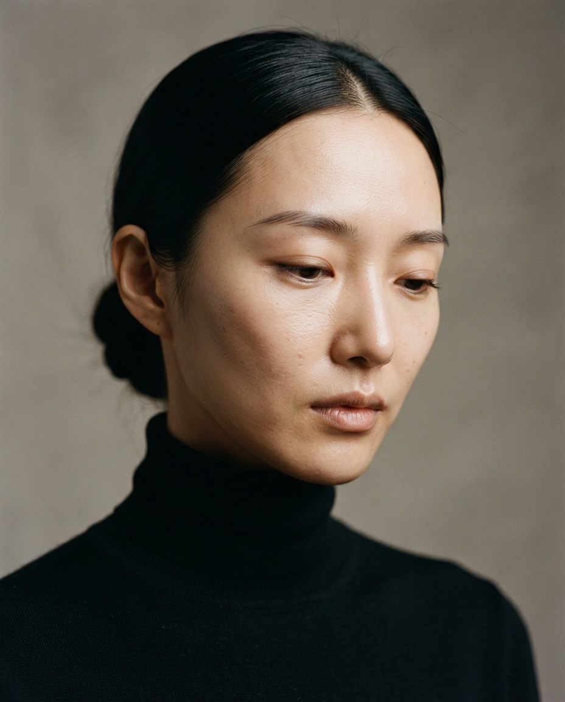
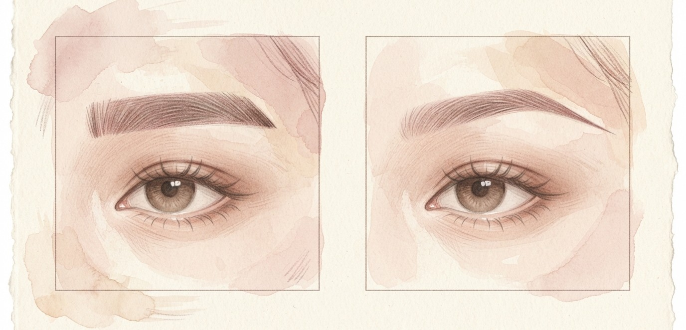
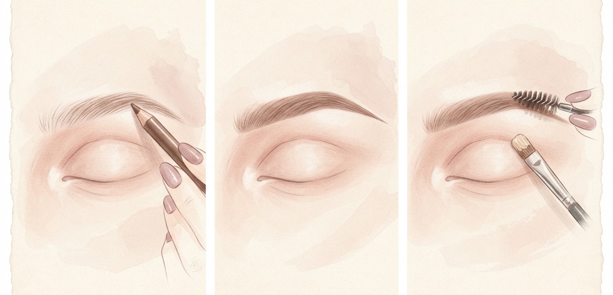

짙게 그리지 말고 선과 길이만 바꿔요.
가을 눈썹 하우투.

눈꼬리보다 약간 길게 뺀 눈썹 꼬리는 시선을 옆으로 넓혀 얼굴 옆 여백을 슬림하게 채워줘요. 화려한 색조 없이도 세련돼 보여요.

심이 얇은 펜슬이나 사선 브러시로, 눈썹 산부터 관자놀이 쪽으로 힘 빼고 짧게 여러 번 터치해요.
끝은 바늘 끝처럼 얇게 맺어요. 한 번에 꾹 긋지 않기.
스크류 브러시로 경계를 풀고, 컨실러 묻힌 납작 브러시로 꼬리 밑선을 정리해요.
꼬리를 그린 뒤 컨실러로 밑선만 한 번 정리해 보세요.
선이 깔끔해져서 훨씬 우아해 보여요.
저장해두고 쇼핑할 때 꺼내보세요